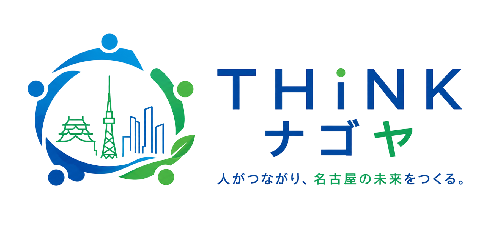
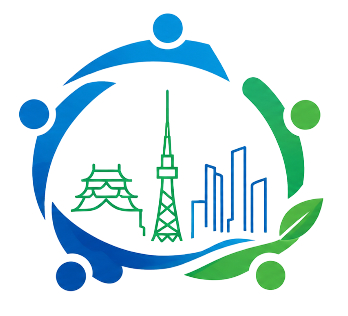
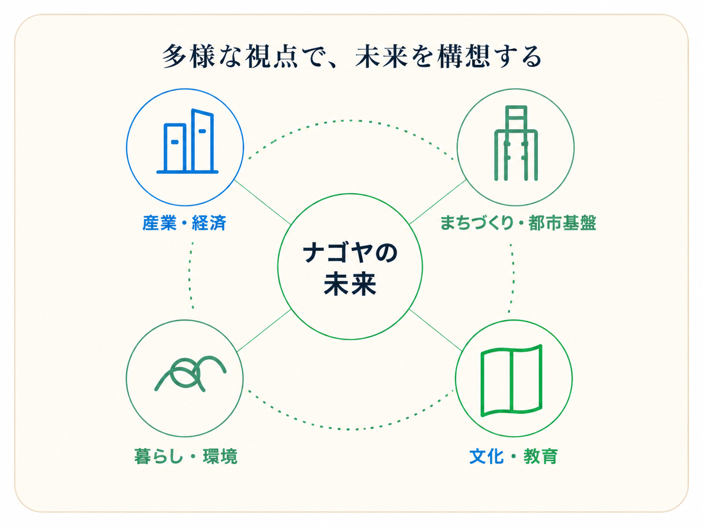
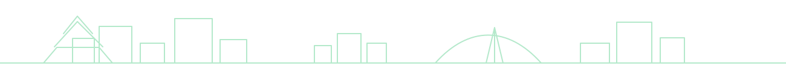

若者と子育て層の流出
20〜30歳代の東京流出、0〜14歳の転出超過が構造化し、人口のダム機能が不全。


People connect, Nagoya moves forward.
THINKナゴヤは、多様な人がつながり、都市経営・まちづくり・産業・文化・教育の視点から、名古屋と周辺地域の未来を考え、提言する有志の会です。
ABOUT
名古屋の未来をより良くしたいという想いを持つ人々が集まった、有志の活動体です。
産・学・官・民・文化など多様な分野のメンバーが、フラットな立場で対話し、学び、政策提言を行っています。
2023年の発足以来、毎月の勉強会を軸に、中長期の都市像の構想と発信に取り組んでいます。


ISSUES
20〜30歳代の東京流出、0〜14歳の転出超過が構造化し、人口のダム機能が不全。
事業所数、事業所当たり従業員数、昼間流入人口が停滞し、昼夜間人口比率が低下。
国内外からの観光・交流人口規模が自市規模に比して小さく、成長力が乏しい。
扶助費・人件費の増大により、投資的経費の確保が困難。
IDENTITY
城下町の歴史や多様な文化が息づく、独自の都市の個性。
高度な技術と挑戦の精神が受け継がれる産業の強み。
交通利便性や住環境の良さが、都市の持続力を支える基盤。
PROPOSAL
DOWNLOAD
THINKナゴヤの提言骨子をPDFで確認できます。
MEMBERS
産・学・官・民・文化など多様な分野のメンバーが、フラットな立場で対話し、学び、政策提言を行っています。